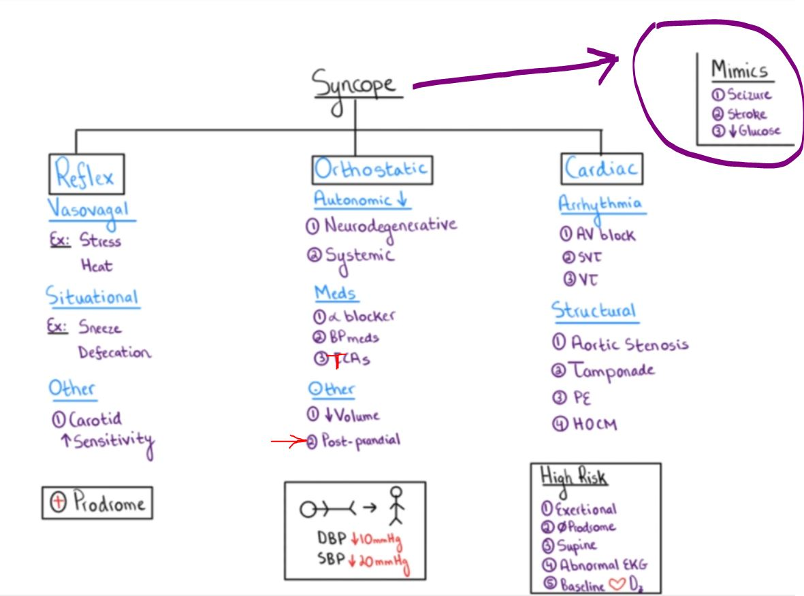
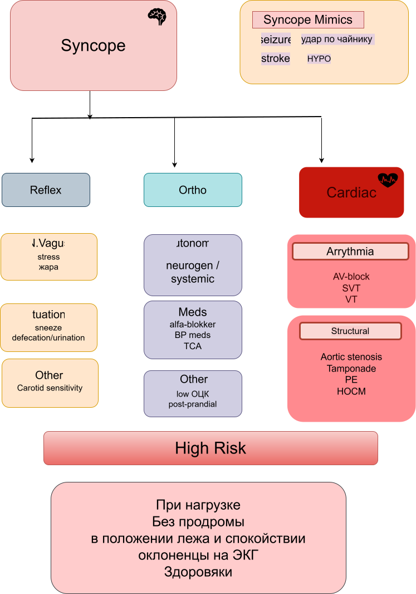

syncopy - временная потеря сознания (temp LOC/TLOC)
Q: Вообще, вопрос, как соотносится синкоп с AMD?
In sycope есть момент, пусть и транзиторный, но полной потери сознания;
При AMS наличие какого-то сознания, а синкоп - это его полный улёт
теория
Синкоп = глобальная гипоперфузия мозга, приводящая к ВРЕМЕННОЙ потери сознания и транзиторной потери верт мышечного тонуса с fast самостоятельным восстановленим сознания (например, принятия горизонт положения)
Физиология: мозг имеет систему авторегуляции и может долго не "падать", однако при АД ниже 50 мм рт ст человек таки упадёт
Mimics syncope
Мимики синкопа: главные три "S" (seizures,sugar,stroke(TIA))
Сам синкоп это "4" S
Причина мимиков не в гипоперфузии мозга.
- seizures - вообще разряд электричества
- инсульт (TIA) ствол, отвечающий за бдение +\- focal deficit
- HYPO/COPD и проч: метаболические расстройства
- анемия
- toxi: лыко не выжет
- травма
Notes: как можно отсеять мимики от синкопа?
Q: Что сильно помогает.
Анамнез. ключевым в branch points является расспрос поца и свидетелей.
Heralded Syncope (дурнота в начле) VS Unheralded Syncope (cardio - внезпное, без предвестий).
И ЧТО делал поц за несколько часов\минут ДО эпизода (особенно физ нагрузка подозрительна, или лежание горизонтально)
Пусть поц расскажет сам подробнее.
Seizures
Отличить судорги от синкопа: трудно.
- подёргивания (немец студенты демо - отличить сложно)
- боковая поверхность прикуса языка (более-менее), передняя поверхность - слабое отличие.
Отличить TIA - редко про потерю сознания, где-то есть невро-дефицит (фокальность), к мб и после мини-инсульта.
При poster brain stem - шаткость походки
Отдельно про падения - мб нейро-мышечное нечто-то или системное заоболевание под капотом
Мой поц с Т-ой упал на фоне пневомнии и вероятно синкопа.
Наши козыри - синкоп это БЕЗ невро дефицита, одышки,боли в груди с ПОЛНЫМ восстановлением
Сложности пока опустим ( падения/ сценарии типа сначала синкоп при нарушении серд ритма, а потом из-за гипоксии судорги)
Три группы причин синкопов
см фото, но и без него ясно, что у пенсов больший риск кардио причин. Дети тоже могут удивить с кардио генезом.


- Reflex (VV - vaso-vagal)
- Ortho (OH)
- Cardio*(структурные и нарушения ритма)
* некоторые поцы всё-таки предсувствуют наступление кардио-обморока.
Hypertrofische Obstructieve Cardiomyopathie
Хотя про кардио-обморок пишут, что внезапно, но учитываем, что бывает продома.
5 "P"s
1. Prodrome
2. Precipitants
3. position
4. palpitations
5. post-event Symptoms
Prodrome
лёгкость в голове, "головокружение", расплывчат образы ==> VV или ортостаз
тошнота, пот, дискомфорт в животе (и даже боль) ==> VV
БЕЗ симптомов ==> VV (у пожилых) or cardio
Precipitants (Триггеры, осбстоятельства и проч):
Не только при кардио-обмороке, но и вообще для всех
ОН, ситуационный синкоп, VV: -- душно-жарко, боль, эмоции, страх,
физ нагрузка НЕДАВНЯЯ, а не во время, обезвоживание (лихорадка, болезнь),
кашель, смех, туалет и даже еда!
Palpitations
Есть - нет. если есть, то какие
post-event Symptoms
общее впечатление
сразу огурчик ==> сердечноe
тошнота-рвота-слабость ==> VV
потный бледный ==> VV >>> seizures
"голубой" ==> seizures
движения
minor twitching but floppy when unconscious (myoclonic jerks) ==> не судорги
VS
ритмические jerks перед ригидностью и ненорм posture ==> seizures (тут мб и нет)
ГЛАЗА
открыты при судоргах или синкопе
закрыты при псевдо-судоргах или психогенном синкопе
mental status
продолжит спутанность или амензия ==> seizures
транзиторная дезориентация ==> Neuro-cardiogenic
амензия на факт потери сознания ==> in oldies Neuro-cardiogenic
Здесь Стефани углубляется в физиологию: вагус, опрто, ЧСС, сердечный выброс:
Всё, как в водопроводе: насос и трубы
Снижение сердечного выброса (Cardiac Output)
Cardiogenic
Obstruction
стеноз аорты
кардиомиопатия
РЕ\лёгочная гипертензия
Жидкость в перикарде
Hypovolemic
Total body
Hemorrhage
GI loss
Renal loss
PO
Тупо кровотечение
Shunting
Sub-clavian steak
Post-meal
Снижение резистентности Resistance
Sympathetic
Common
meds
parkinson(орто)-при быстром начале - синкоп как первая ласточка
DM
Rare
adrenal недостаточность (орто)
amyloidosis - deposits в нервах, к отвечают за подъем АД (годами орто)
thimine
System mastocytosis
Para-sympathetic
VVagal
Micturition
swallowing
seeing blood
Vagal irritation
Ictal syncope
Trigeminal reflex
carotid sensitivity
mediastinal tumor
Ортостаз
Раби указывает на слово СИМТОМАТИЧЕСКИЙ. У чела на верт-горизон АД должны быть симптомы.
Если нет критерия по сист - 20 мм рт, а диастол - 10 мм рт, но поц испытывает жалобы , но это ОРТО (в том числе)
YT с широким взглядом на проблему ортостаза (поц с лимфомой и renal Tx - обнаружен соседом)
ОРТО как причина (случай с лимфомой у поца с почечным трансплантатом)
=====================================================================
Широкий взгляд обрисует pre-load в широком смысле слова.
Мы конечно знаем, что в большом % случаев - это всё не ужос, но ОЦК может хронически болтаться около плинтуса:
- ОЦК - поц (в т.ч. и от депрессии) мало ест и пьёт (poor intake), то и ОЦК будет не богато.
И\ИЛИ systemic - нет сил есть
если у поца нет сил купить еды, или даже жевать, то сил не хватит на вертикализацию и проч
- крованул немало куда-то
- лихорадит и вегативн ответ в обмороке
- РЕ - мало вероятно, но вдруг
- что-то с вегетатикой на последних оборотах (автоном НС дисрегуляция )
- препараты на АД, к на фоне почечных проблем повысились в концентрации
Так, или иначе, но мы хотим + в\в физ раствор и посмотреть на ответ.
Но и безотносительно, учитывая падение и день валяния на полу, искать лаб и проч признаки системного воспаления (СВС, С-РБ и проч)
CARDIO как причина sycope
Обычно внезапно без продромы, и часто во время (физ) напряжения
PMH + family Hx: Спросить внезап смерти в семье (молодые); Медикация; Свидетели; Другие заболевания (Крон с недавней кровопотери)
Итак,
1. Neuro-cardiogenic (VV, carotid sinus, OH)
VS
2. Cardiac (arrhythmias, structural,rare dis)
пояснение к Neuro-cardiogenic (VV, carotid sinus, OH)
VV - кровь к ногам (адрен) + бради (вагус)
В любом случае - синкоп это кратко и полное быстрое восстановление сознания
Поц, придя в сознание, должен рассказать, типично ли это у него, и испытывает ли продрому,
а также ЧЕМ ПЕРЕД этим занимался.
пояснение к N2
From Cardiac причин синкопа самый частый
-- аритмия
--- бради-аритмия (дисфункция SA or AV node)
--- tachy-аритмия (SVT or vertricular )
-- структурные изменения - неадекватный выброс
--- патология клапанов (aortic stenosek)
--- опухоли сердца
--- заболевания перикарда
--- кардио-мио-патии
--- VTach with structural heart disease
-- rare
--- ишемия сердца
--- РЕ
--- диссекция аорты
--- подключичный steal Sd-m (анамнез с понятие рук ДО потери сознания)